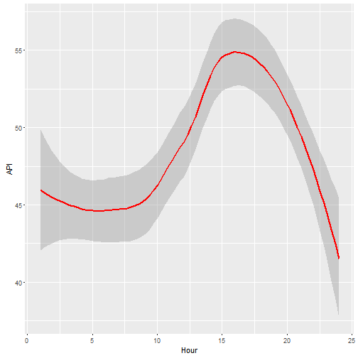

This presentation aims to introduce a Shiny application to allow exploratory data analysis of the hourly Air Pollutant Index (API) trend of a place called Banting in Selangor, Malaysia. API reading from Banting is often used as one of the benchmark to indicate the air quality in the state of Selangor.
Banting Air Pollutant Index Application
For API reading from 1 August 2013 until 5 February 2015
Chin Kam Seam
Introduction
Application Description
The API data used for the application are from 1 August 2013 until 5 February 2015. This application can be used to explore the API for a particular month of a year which are selectable and the corresponding hourly trend will be displayed.
This application can be accessed at the following URL:
Screenshot of the application

Sample of code used for plotting
ggplot(data=selected.data, aes(x=selected.data$Hour, y=selected.data$API)) +
geom_smooth(color="red") + labs(x="Hour", y="API")
